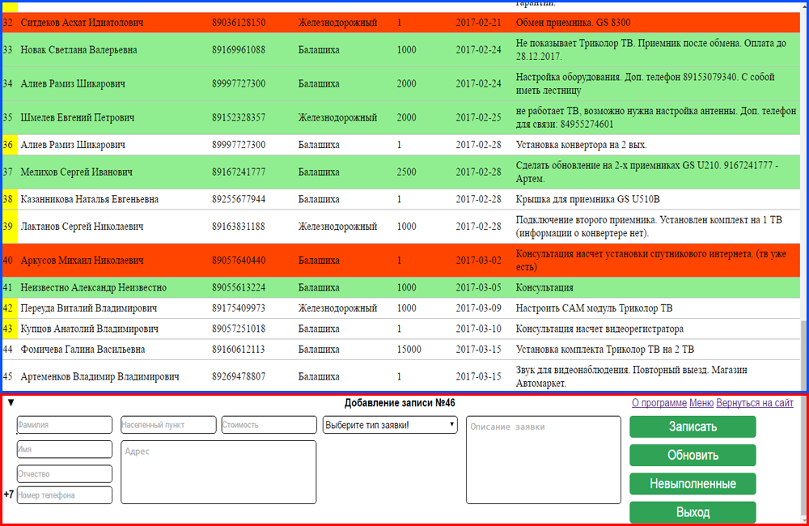
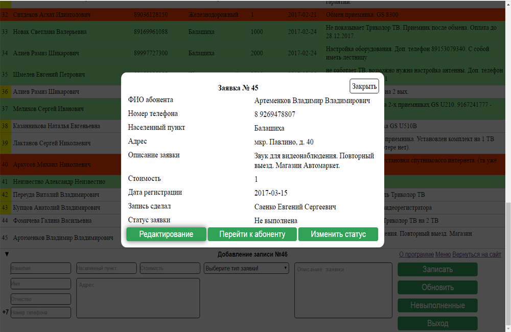
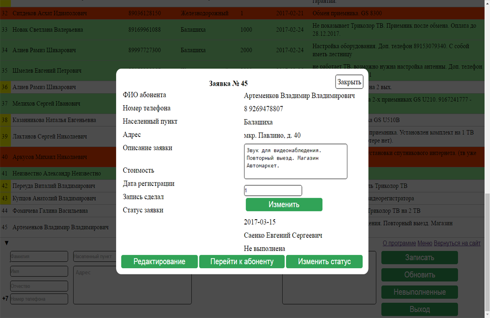
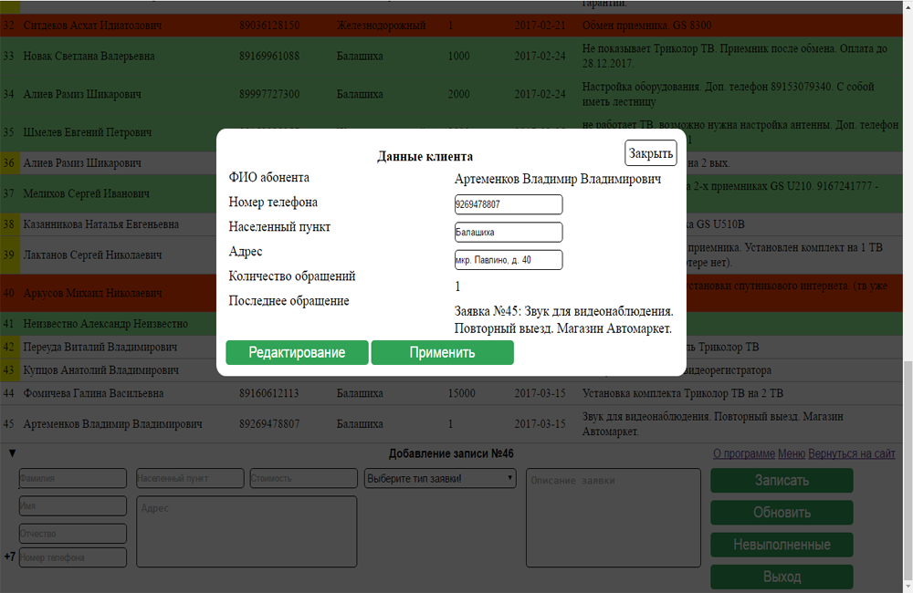
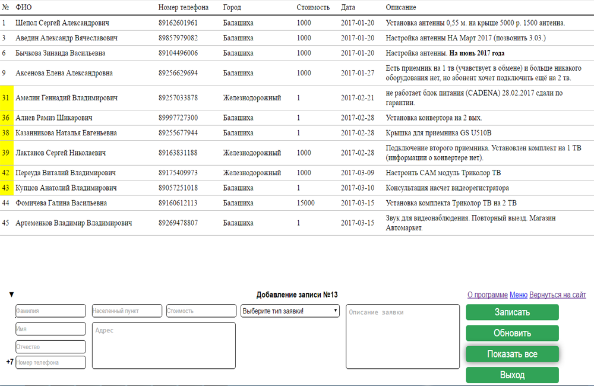
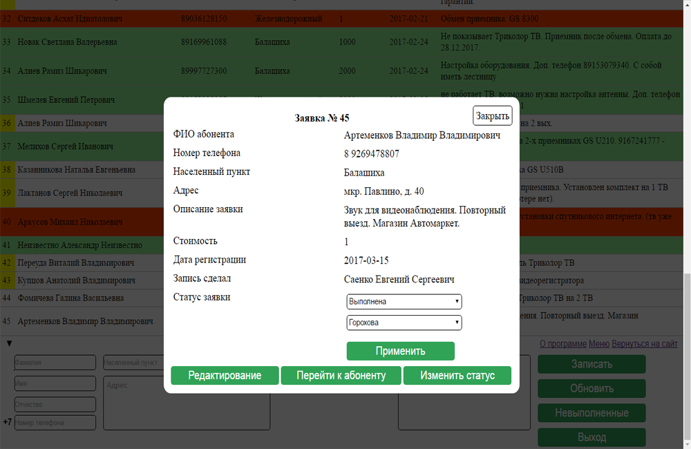
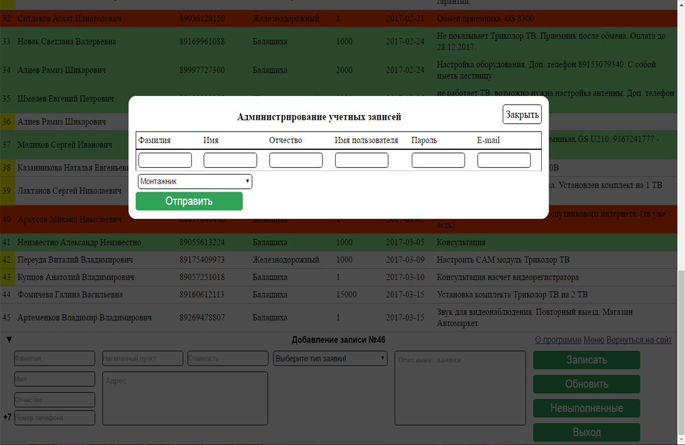
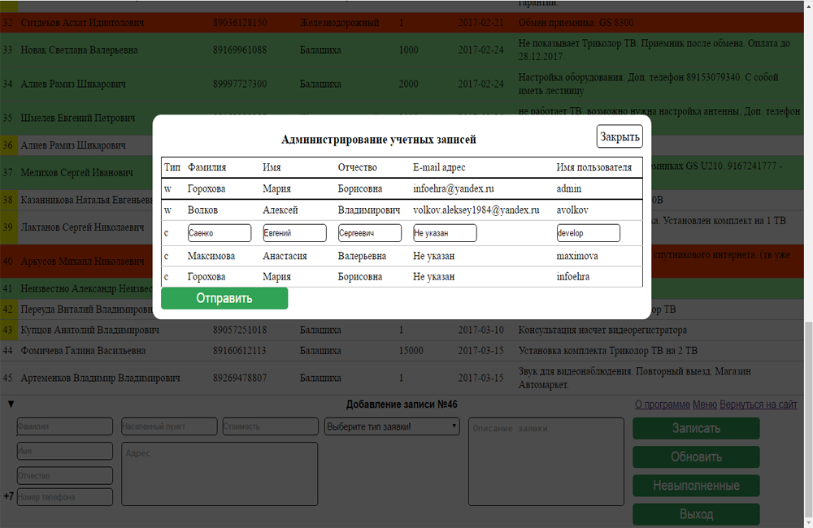
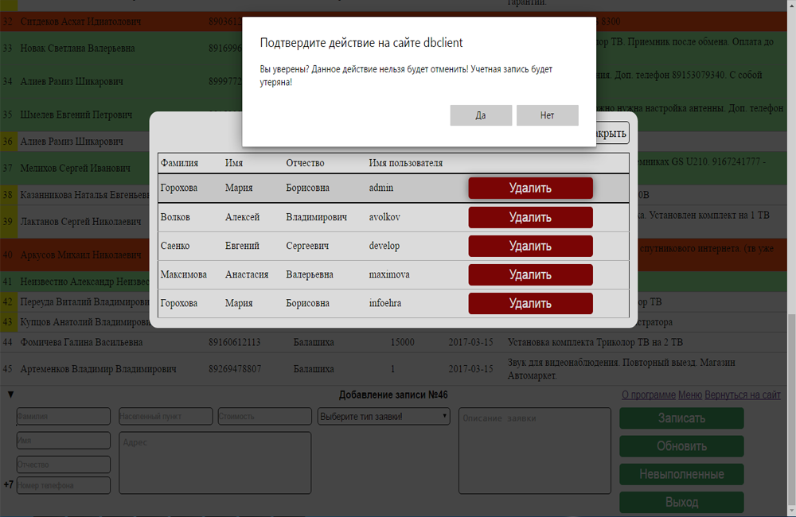

Руководство пользователя предназначено для обучения специалиста работе в прорамме "Журнал учета заявок MangApp", а так же является справочником при решении возможных проблем в работе программы. Данное руководство состоит из двух разделов. В разделе "Описание и работа" содержится подробная инструкция по работе в программе. В разделе "Обслуживание" содержится информация по администрированию программы. Для работы в программе пользователь должен обладать основными навыками работы в операционной системе, а так же навыками работы с браузером.
Программа "Журнал учета заявок MangApp" предназначена для учета клиентов и поступающих от них обращений с целью контроля и дальнейшего использования данных пользователя при повторных обращениях и рассылки рекламных предложений.
Для начала работы в программе работнику необходима учетная запись пользователя. Без учетной записи доступ к Журналу учета заявок невозможен. Для получения учетной записи обратитесь к Вашему администратору или иному лицу имеющему необходимые полномочия. После получения данных учетной записи необходимо пройти аутентификацию в программе. Для этого введите полученные Логин и Пароль на странице аутентификации (доступной по адресу http://tvnet3.ru/tv-journal/index.php). После прохождения процедуры аутентификации перед пользователем предстает основное окно программы.
Рис. 1 Основное окно программы
На рисунке выше красной рамкой выделена панель управления в которой располагаются регистрационная форма и основное меню. Синей рамкой выделена таблица с заявками зарегистрированными в системе.
Для регистрации новой заявки необходимо заполнить форму расположенную в панели управления. Уточняйте у клиента всю необходимую для заполнения всех полей формы информацию. Незаполнение некоторых полей может повлечь ошибки в оценке стоимости и конкретизации проблемы возникшей у клиента! После заполнения всех полей проверьте правильность введенных данных. Особое внимание следует уделить ФИО клиента - эти данные не подлежат редактированию!. После ввода личных данных выберите тип заявки, в зависимости от проблемы с которой обратился клиент. После выбора типа заявки заполните дополнительные поля для получения более подробной информации о проблеме и данных которые могут понадобиться в процессе ее решения. После проверки и подтверждения всех данных следует зарегистрировать заявку в системе нажав кнопку "Записать". Кнопка сменит свой цвет и название на "Отправка..." до полной отправки данных и окончания регистрации. Перезагружать страницу в этот период воспрещается! После завершения регистрации страница будет автоматически перезагружена и новая заявка появится в конце таблицы.
При повторном обращении клиента следует произвести регистрацию заявки для зарегистрированного клиента. Данная процедура ничем не отличается от обычной регистрации заявки за исключением одного момента. При заполнении личных даннях клиента (ФИО) отобразится список уже зарегистрированных клиентов с этими данными. Необходимо кликнуть ЛКМ по строке с необходимыми данными. Форма автоматически заполнится имеющимися в базе данными. Внимание! Автоматическое заполнение закрепит новую заявку за данным клиентом! Функцию автозаполнения следует использовать только в случае повторного обращения клиента! После завершения заполнения всех необходимых полей необходимо как и в случае с обычной регистрацией заявки завершить ее отправкой данных с помощью кнопки "Записать". В случае если вы выбрали неверного клиента нажмите ЛКМ по кнопке "Обновить" на панели управления, страница будет перезагружена и форма очищена от данных автоматического заполнения.
Данные в основной таблице являются кратким описанием каждой записи. Для получения более подробной информации по конкретной записи необходимо нажать ЛКМ по строке записи. Поверх основного окна будет открыто окно с подробными данными по конкретной записи.
Рис. 2 Окно подробной информации
На данном экране располагается вся доступная информация по конкретной записи. Снизу располагаются элементы управления данного окна. Для редактирования данных записи необходимо нажать ЛКМ по кнопке "Редактирование". Данные доступные для редактирования будут помещены в соответствующие текстовые поля и автоматически заполнены имеющейся на данный момент информацией. Ниже представлен рисунок с активным режимом редактирование данных записи.
Рис. 3 Активный режим редактирования данных записи
Закончив внесение необходимых изменений необходимо подтвердить изменение нажав ЛКМ на кнопке "Изменить". Данные будут занесены в базу. После успешного занесения страница будет автоматически перезагружена.
Для получения всей имеющейся информации о клиенте за которым закреплена данная запись небходимо нажать ЛКМ по кнопке "Перейти к абоненту". Окно программы будет обновлено данными клиента. Снизу располагаются элементы управления. Для редактирования данных клиента кликнуть ЛКМ по кнопке "Редактирование". Как и в случае с редактированием данных записи для редактирования будут выведены необходимые текстовые поля заполненные имеющейся информацией.
Рис. 4 Активный режим редактирования данных клиента
После завершения редактирования неободимых данных для подтверждения внесенных изменений необходимо нажать ЛКМ по кнопке "Применить". После успешной отправки данных и применения изменений страница будет автоматически перезагружена.
Все записи в основной таблице программы могут иметь 4 цветовых индикатора:
Для удобства обозревания вы можете скрыть все заявки которые имеют статус отличный от "Не выполнена". Для этого нажмите ЛКМ по кнопке "Невыполненные". Страница обновится и в основной таблице останутся только невыполненные заявки. Для отмены фильтрации необходимо нажать ЛКМ по кнопке "Показать все".
Рис. 5 Фильтрация основной таблицы по типу записей
После заверщения работ по поступившей заявке или ее отмене по инициативе компании или клиента необходима изменить статус записи. Для изменения статуса записи необходимо нажать ЛКМ по кнопке "Изменить статус" в окне подробной информации по конкретной заявке, после чего выбрать необходимый статус записи (Выполнена/Отменена) и из списка возможных исполнителей выбрать работника выполнившего работы по данной заявке, после необходимо подтвердить изменение статуса записи нажав ЛКМ по кнопке "Применить". После успешного применения страница будет автоматически перезагружена.
Рис. 6 Изменение статуса записи
После завершения работы в программе необходимо деавторизоваться в программе воизбежания использования другими работниками Вашей учетной записи (В особенности учетной записи администратора). Для этого необходимо нажать ЛКМ по кнопке "Выход". Будет произведен выход из учетной записи, после успешной деавторизации программа переадресует запрос на страницу авторизации пользователя.
Для добавления учетной записи пользователя нажмите ЛКМ по пункту "Меню" на панели управления в основном окне программы. В открывшемся окне нажмите ЛКМ по пункту "Добавление учетной записи". В открывшемся окне добавления учетной записи заполните все необходимые поля. После заполнения всех полей выберите тип учетной записи (Монтажник(Выбрано поумолчанию)/Кассир). Для подтверждения создания новой учетной записи нажмите ЛКМ по кнопке "Отправить". После успешного внесения данных страница будет автоматиески перезгружена.
Рис. 7 Окно добавления новой учетной записи
Для редактирования данных учетной записи нажмите ЛКМ по пункту "Меню" на панели управления в основном окне программы. В открывшемся окне нажмите ЛКМ по строке с данными учетной записи которую необходимо редактировать. Отредактируйте необходимые данные в текстовых полях учетной записи. После редактирования для применения внесенных изменений нажмите ЛКМ по кнопке "Отправить". После завершения применения внесенных изменений страница будет автоматически перезагружена.
Рис. 8 Окно редактирования данных учетной записи
Для удаления учетной записи нажмите ЛКМ по пункту "Меню" на панели управления в основном окне программы. В открывшемся окне для удаления записи нажмите ЛКМ по кнопке "Удалить" в строке с данными записи которую необходимо удалить. Подтвердите удаление учетной записи в уведомлении от программы. После успешного удаления учетной записи страница будет автоматически перезагружена.
Рис. 9 Окно удаления учетной записи
Разработка Евгения Саенко
Вернуться к программе